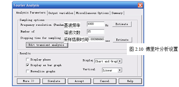

1、通过单级放大电路的仿真练习，初步了解Multisim2001的基本使用；
2、掌握利用Multisim2001进行电路静态工作点分析、交流小信号分析、瞬态分析、傅里叶分析、参数扫描分析、温度扫描分析等。
注意：由于节点编号给连线顺序有关，你的节点编号可能与图2.1不同。若没有显示节点编号，可以通过如下设置。
菜单栏→Options（参数）→Preferences（优先设置）→Circuit（电路），将Show node names前选中即可。
（1）直流工作点分析（DC Operating Point）
a、菜单栏→Simulate（仿真）→Analyses（分析）→DC Operating Point…（直流工作点
b、在图2.2窗口中选择仿真参数类型（电压和电流、电压、电流、器件/模型参数、所有变量）。这里选择“电压”。
c、将节点1、2、3、10添加到右边仿真变量窗口中，若选择错误可以移回变量到右边窗口中。
d、点击“Simulate”，开始仿真，结果如图2.3所示。从表中看出三极管Q1的基极电压为V1=2.25821V，发射极电压V2=1.61939V，集电极电压V2=5.7751 6V，电源电压V10=12.00000V，三极管工作在放大状态。
（2）交流小信号分析（AC Analysis...）
交流小信号分析主要用于分析电路的幅频特性和相频特性。考虑到后面分析需要，先对V1做一定的设置，双击V1设置成如图2.4、2.5所示。其中瞬态分析的信号参数用于电路的实时分析，交流小信号设置的参数用于频率特性分析，失真度分析的信号电压用于分析电路失真度，频率为瞬态分析设置的频率。在进行仿真前一定要对实际情况有个初步判断，信号参数应尽量接近实际值，以免出现严重误差。
a、菜单栏→Simulate→Analyses→AC Analysis...。
b、在图2.6中设置扫频方式，在图2.7中设置输出变量（需要观察的信号）。
c、运行仿真，结果如图2.8所示（省略相频特性）。
从频率特性中可以看出，中频输出电压V4=10.0443V，输入电压在图2.5设置为V1=0.1V，因此，中频电压放大倍数为100.443。
（3）瞬态分析（Transient Analysis...）
瞬态分析又称为实时分析或时域分析，相当于用示波器观察波形分析，可以很直观地反映出电路的工作状态，尤其对于观察电路的暂态过程，非常方便。
a、菜单栏→Simulate→Analyses→Transient Analysis...。
b、在图2.9中设置好开始时间和结束时间。
c、运行仿真，结果如图2.10所示。
从仿真结果看出，在通电3ms以前电路处于暂态，然后电路处于稳态。输出电压的峰值为100mV，在图2.4中设置的输入电压峰值为1mV，因此电路的放大倍数为100。与交流小信号分析的结果基本一致。
若将图2.4中设置的输入电压峰值为100mV，则可以明显地观察到放大电路出现失真。因此瞬态分析对于分析放大电路的最大输出动态范围非常有利。
（4）傅里叶分析（Fourier Analysis...）
傅里叶分析又称为频域分析，对观察输出信号中新增频率信号非常有用。若有新增频率信号，说明电路产生了飞线性失真。
a、菜单栏→Simulate→Analyses→Fourier Analysis...。
b、在图2.10中设置好基波频率和谐波次数，输入信号的幅度由图2.5频率特性电压确定。

c、运行仿真，结果分为列表形式（只列出前6次谐波的情况）和频谱模式。
从列表中看出，V4基波电压为0.0974803V，V4二次谐波电压为0.000663501V，V4三次谐波电压为0.000395291V……。由于高次谐波幅度很小，在图2.11中几乎没有显示出高次谐波频谱，所以输出电压失真较小，在列表中显示非线性失真THD=0.97621 %。
（5）参数扫描分析（Parameter Sweep Analysis...）
参数扫描分析就是通过对电路中某些元器件参数，在一定范围变化时对电路性能的影响进行分析，相当于对电路做调试工作，以此对电路的某些性能指标进行优化。下面以确定图2.1的最大动态范围为例。